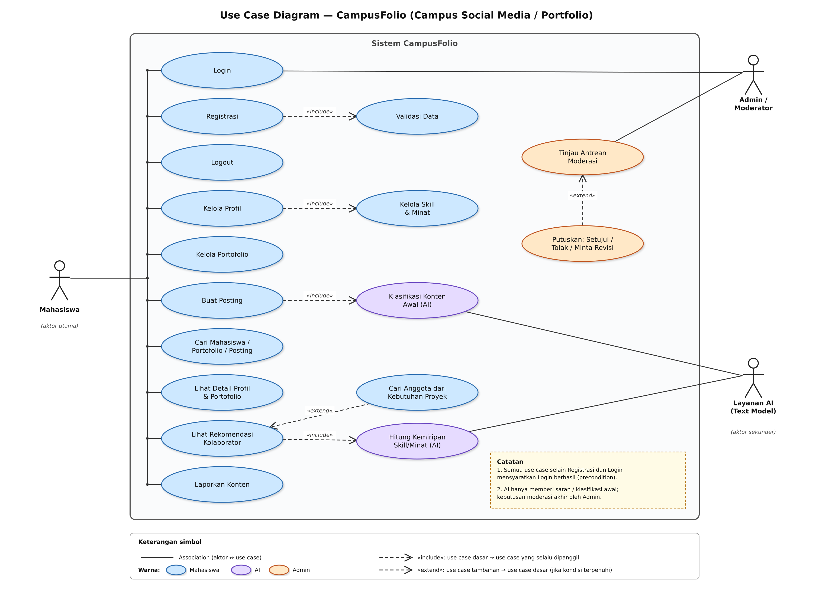
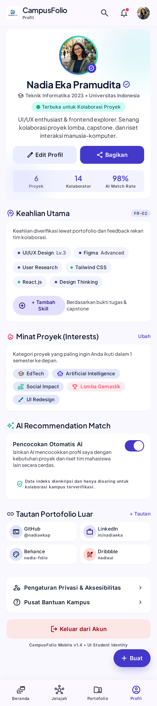
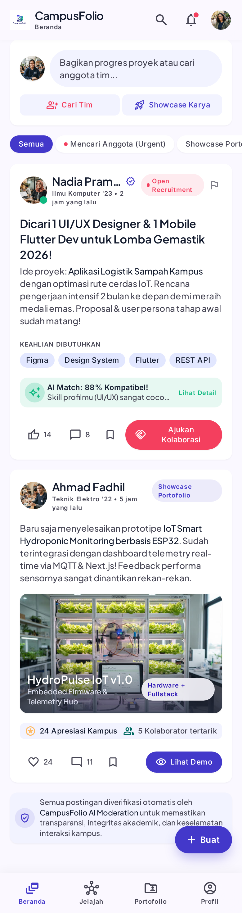
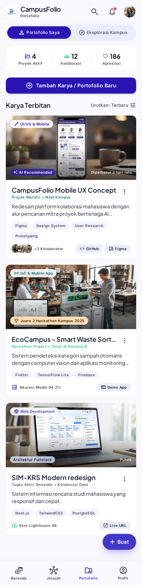
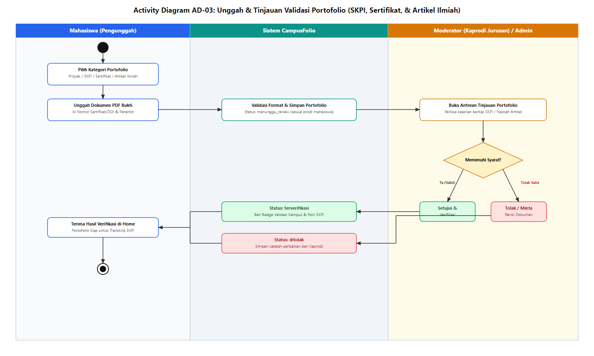
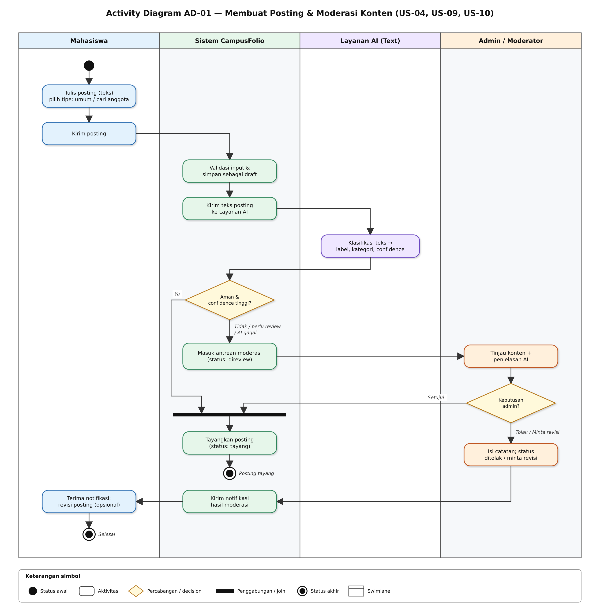
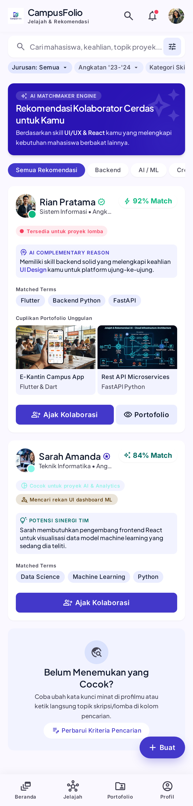
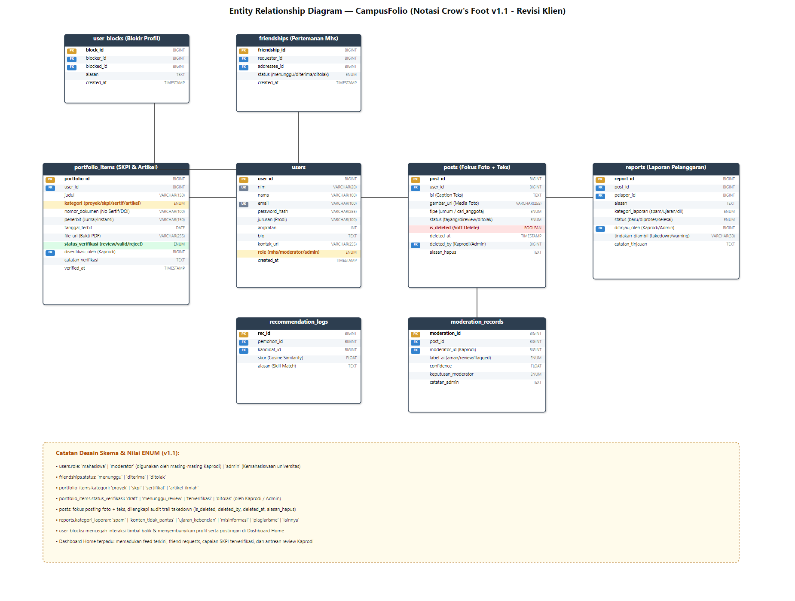

Desain Arsitektur Aplikasi & Alur Pengguna Terintegrasi (Registrasi hingga Logout)
Aplikasi jejaring sosial dan portofolio terpadu mahasiswa dengan rekomendasi kolaborator cerdas berbasis AI teks serta moderasi konten Human-in-the-Loop.
Lead Backend FastAPI, Arsitektur Database PostgreSQL, Pipeline AI & Git Repository Lead
UI/UX Design Lead, Wireframing, Stitch Mockup System, User Research & Interaction
Product Strategy, Backlog MoSCoW, Perumusan Hipotesis AI, Pitching & Validasi Kebutuhan
Sprint Tracking, DoD Verification, Traceability Matrix & System Documentation
Mengapa mahasiswa membutuhkan platform portofolio dan kolaborasi khusus kampus?
"Mahasiswa yang ingin membentuk tim proyek membutuhkan cara yang lebih mudah untuk menemukan rekan se-universitas dengan skill dan minat yang saling melengkapi, karena keahlian dan portofolio mereka tersebar di berbagai tempat dan sulit ditelusuri. Kondisi tersebut membuat tim terbentuk tanpa komposisi kemampuan yang sesuai dengan kebutuhan proyek."
Solusi CampusFolio: Menyediakan wadah profil terpusat, feed foto & teks, serta rekomendasi kolaborator berbasis AI teks agar mahasiswa menemukan rekan yang relevan secara cepat, tepat, dan dalam ruang interaksi kampus yang aman.
Value proposition yang membedakan CampusFolio dari media sosial konvensional.
Penyimpanan terpusat untuk 4 kategori: Proyek Karya, Bukti SKPI, Sertifikat Kompetensi, dan Artikel Ilmiah (Jurnal/Konferensi).
Pencocokan kolaborator cerdas (TF-IDF & Cosine Similarity) yang memahami variasi bahasa dan memasangkan keahlian saling melengkapi.
Penyaringan postingan awal oleh AI kontekstual. Keputusan takedown final tetap di tangan Kaprodi & Admin demi keadilan etis.
Agregasi sentral satu layar: linimasa feed foto & teks, status validasi SKPI, friend requests, dan kartu rekomendasi partner.
Berdasarkan kesepakatan resmi pada ADR-0001 (Architectural Decision Record)
/docsbcrypt + JWT AuthHierarki hak akses pengguna untuk menjaga integritas data dan keamanan akademik.
Mengelola profil & skill, mengunggah portofolio SKPI/artikel ilmiah, membuat postingan foto+teks, berkirim pertemanan, blokir pengguna, dan melaporkan konten.
Memvalidasi dokumen bukti SKPI mahasiswa prodinya, meninjau antrean postingan berstatus review, dan mengeksekusi takedown postingan bermasalah.
Pengawasan universitas menyeluruh lintas program studi, eskalasi pelanggaran, audit sistem, dan manajemen akun pengguna.

10 Tahapan utama alur interaksi mahasiswa di dalam platform CampusFolio
Otentikasi multi-role aman dengan validasi NIM dan enkripsi password.
@kampus.ac.id), Password, Jurusan/Prodi, dan Angkatan.users.bcrypt sebelum disimpan ke database.
TABLE users
• user_id: BIGSERIAL PRIMARY KEY
• nim: VARCHAR(20) UNIQUE NOT NULL
• nama: VARCHAR(100) NOT NULL
• email: VARCHAR(100) UNIQUE NOT NULL
• password_hash: VARCHAR(255) NOT NULL
• jurusan: VARCHAR(100) NOT NULL
• angkatan: INT NOT NULL
• role: ENUM ('mahasiswa', 'moderator', 'admin')
Membangun identitas profesional dan katalog kompetensi mahasiswa.

Pusat kendali sentral yang mengagregasi seluruh aktivitas kampus.

Membangun jejaring kolaborasi positif serta perlindungan privasi pengguna.
menunggu).diterima) atau Tolak (ditolak).user_blocks), kedua akun saling disembunyikan: postingan hilang dari feed, profil tidak dapat dicari, dan tidak muncul di AI recommendation.Mewadahi proyek aplikasi, bukti SKPI, sertifikat pelatihan, dan artikel ilmiah.
Metadata Lengkap: Judul, deskripsi, tautan URL, nomor dokumen/DOI, penerbit, tanggal terbit, berkas PDF bukti, dan tag skill.

Validasi resmi keabsahan dokumen SKPI dan artikel ilmiah tingkat Program Studi.
terverifikasi, muncul badge centang resmi, dan poin SKPI tercatat di transkrip akademik pendamping.
Fokus kombinasi foto + teks dengan penyaringan konten cerdas Human-in-the-Loop.
aman (Confidence tinggi) → Langsung tayang di feed publik.perlu_review → Ditahan di antrean moderator manusia.
Pencocokan partner tim berbasis kemiripan semantik dan keahlian komplementer.

Penegakan norma kampus dengan soft-delete dan pencatatan jejak audit lengkap.
reports dan memicu alert peringatan di dashboard Kaprodi prodi terkait.is_deleted = TRUE, serta mencatat deleted_by, deleted_at, dan alasan_hapus demi transparansi audit.Mengunci kembali hak akses dan membersihkan state otentikasi lokal.
Seluruh data portofolio, status SKPI, riwayat pertemanan, dan postingan tersimpan permanen di cloud database Supabase siap digunakan kembali pada sesi berikutnya.
Struktur 10 tabel PostgreSQL Supabase dengan integritas relasi referensial kuat.
users : Akun, NIM, role, bioskills : Master kamus keahlianuser_skills : Relasi keahlian userfriendships : Relasi pertemananuser_blocks : Isolasi privasi blokirportfolio_items : Karya, SKPI, artikelportfolio_skills : Tag karyaposts : Linimasa foto & tekspost_skills : Skill dicari pada timmoderation_records : Audit AI & Adminreports : Laporan aduan pelanggaranrecommendation_logs : Evaluasi AI
4 Layar antarmuka utama yang dirancang oleh Hipster (Hakim)
Linimasa foto, caption, rekrutmen tim
Galeri karya, SKPI, sertifikat & artikel
Biodata, badge kemahiran & kontak
Pencocokan AI 88% Match & filter
Rencana implementasi bertahap menggunakan metodologi Agile Scrum.
"CampusFolio — Membangun Kolaborasi Akademik Masa Depan."
Catatan untuk slide ini...